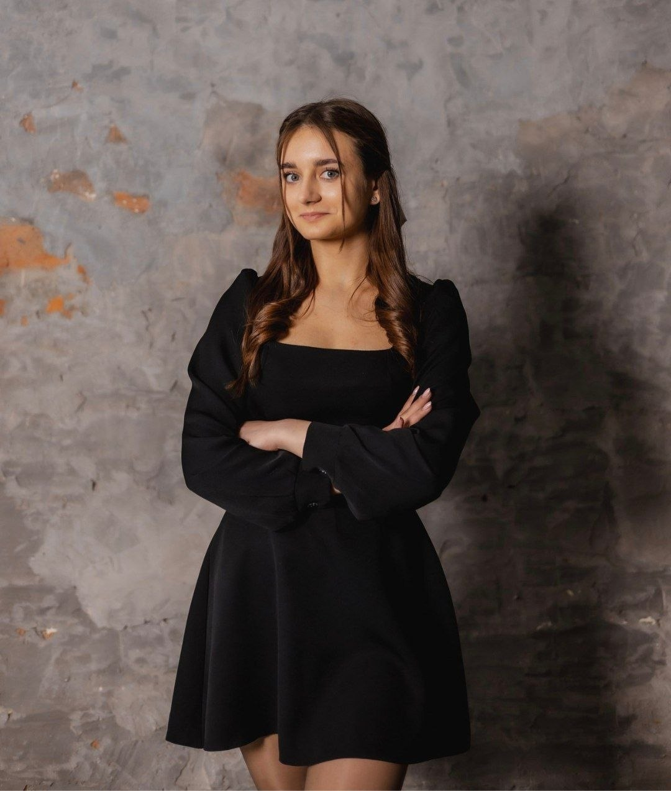

Profile

Hello! My name is Daria Tsybulia. I am a student interested in modern technologies, web development, and digital art.

Hello! My name is Daria Tsybulia. I am a student interested in modern technologies, web development, and digital art.
I am a 2nd-year student at Ivan Franko National University of Lviv, Faculty of Electronics, majoring in Computer Science.
I have experience studying C++, Delphi, and Python.